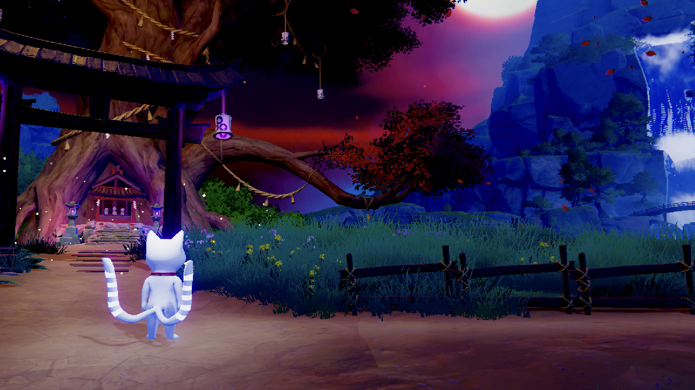
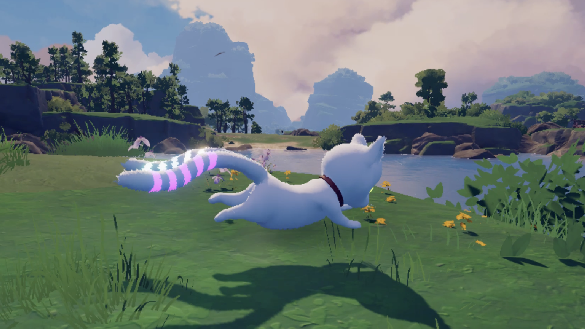
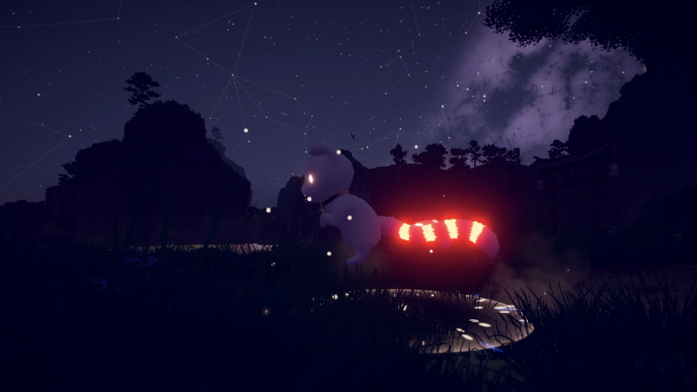
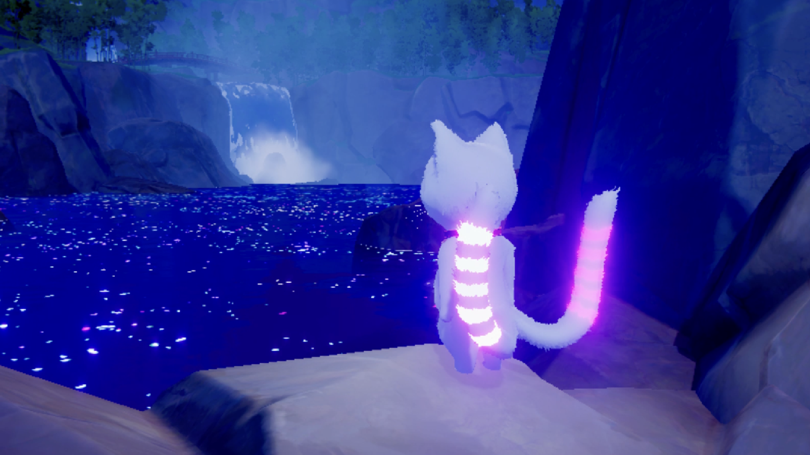
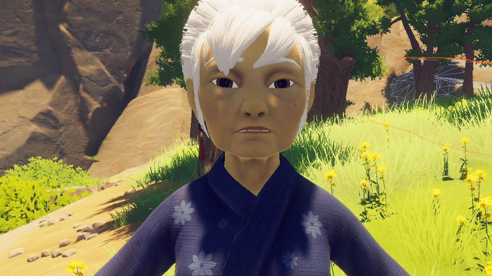
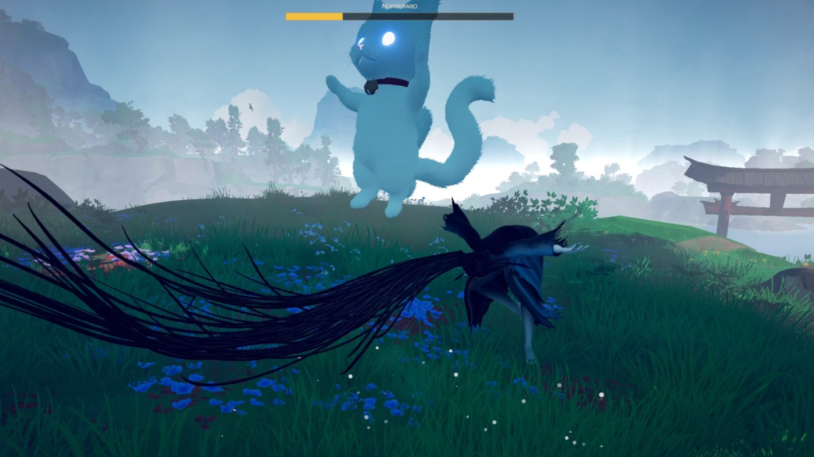

In-Game Screenshots
From the Current Build

Exploration, Light Path
Flowers, waterfalls, warm light. The world responds to mercy.

A Quiet Moment
Purgatory isn't always dangerous. Sometimes it's just still.

Deep Into the Dark Path
Spirit lanterns and burning rings. Beautiful, but eerie.

The Eclipse
Both tails full. The final chapter begins.

Tomoe, the Grandmother
Transform into the old woman Yoru used to be. She sees what the cat cannot.

Facing a Yōkai
Every enemy was a person once. Some are too far gone to reason with.

Path of Shadow
Twilight. Dense fog. The weight of every soul you've ended.

The Ancient Tree
Bring souls here. Receive rings. Remember who you were.

Purgatory
A Japanese landscape suspended between life and death.